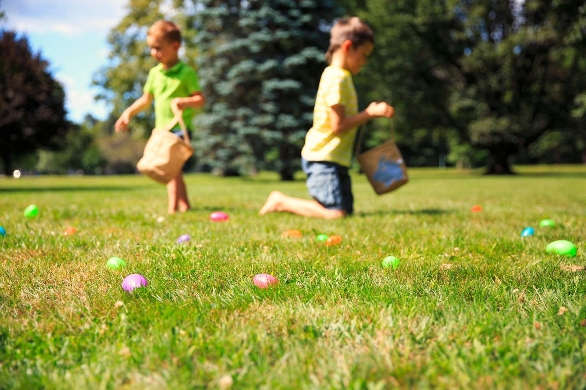
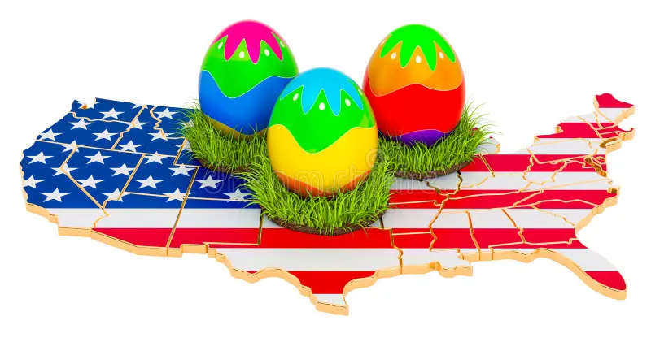

Nos Estados Unidos, a Páscoa é celebrada de maneira muito alegre e colorida, especialmente entre as crianças. Embora também tenha significado religioso para os cristãos, grande parte da comemoração envolve atividades familiares e tradições divertidas. Igrejas realizam cultos especiais, e muitas famílias frequentam celebrações no domingo de Páscoa.

Uma das tradições mais conhecidas no país é a “caça aos ovos”, chamada de Easter Egg Hunt. Nessa brincadeira, os adultos escondem ovos coloridos ou ovos de chocolate para que as crianças procurem pelo jardim, dentro de casa ou em parques. Essa atividade é muito popular e costuma acontecer em escolas, igrejas e eventos públicos.

Além disso, o coelho da Páscoa é um símbolo muito forte nos Estados Unidos. Muitas casas são decoradas com coelhos, ovos coloridos e flores da primavera. A Páscoa no país é vista como um momento de alegria, renovação e convivência familiar, misturando tradição religiosa com diversão.
